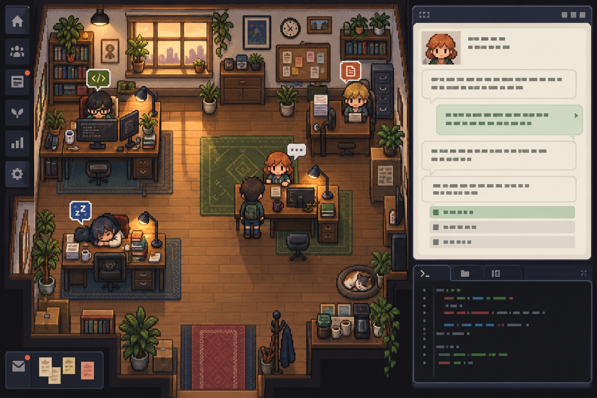

● 2 working ◆ 1 needs review
Move: arrow keys / WASD · Press E to talk
Rowan needs a choice before moving the conversation layout forward. This simulated request is deliberately separate from live execution.
Rowan · proposal v1Choose a starting direction, or tell me what neither option captures.
A choice or comment starts a versioned back-and-forth. Nothing is approved until you explicitly approve a returned version.